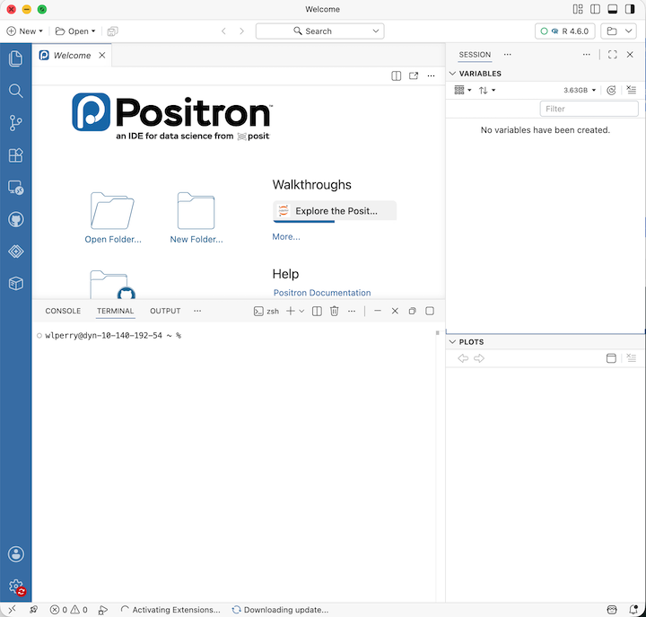
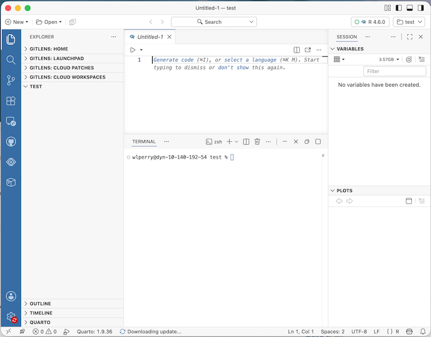

Lecture 02 — Introduction to R and Positron
R, Positron and Projects
2026-08-27
What is R, really?
- R is the engine — a free language for data and statistics
- We drive that engine through an IDE (a code editor)
- Two good IDEs — you may try both:
- Positron — what we use (recommended)
- RStudio — the long-time classic
Note
📖 New word
IDE = Integrated Development Environment. Think of R as the car engine and the IDE as the seat, wheel, and dashboard.

R is a calculator
Type math straight into the console and press Enter:
R answers immediately. The console is great for quick “what is the answer?” questions.
Warning
⚠️ Watch out!
- A
+at the start of the console line means R is still waiting for you to finish a command. - Press Esc to start over.
Note
📊 Coming from Excel?
- This is just like typing
=3+5into an Excel cell - except there are no cells, just a line you type and run
Functions and their arguments
A function is a canned script you call by name. You feed it arguments (inputs); it returns a result:
Stuck on a function?
Note
📖 New word
Argument = an input you hand to a function inside its ( ).

Do not retype — use a script
The console forgets and you would have to retype all of your code over and over….
A script (.R file) remembers and re-runs code
- File → New File → R File opens a blank script
- Type your commands, one per line
- Put the cursor on a line and press Ctrl/Cmd + Enter to run it
- Save with Ctrl/Cmd + S — reopen later and re-run everything
Note
✅ Key idea
- Console = scratch paper.
- Script = the lab notebook you keep.

Two functions for two file types
Put your files in the project’s data/ folder, then:
library(tidyverse)
library(readxl)
library(janitor)
# Excel files (.xlsx)
tree_df <- read_excel("data/2026_06_25_tree_experiment_raw_data.xlsx") %>%
clean_names()
# CSV files (.csv) — used by NOAA, iNaturalist, many databases
noaa_df <- read_csv("data/noaa_global_yearly_temps.csv") %>%
clean_names()Note
✅ Key idea
read.csv()- comes with base r and can have issuesread_excel()- needslibrary(readxl).read_csv()- needslibrary(tidyverse)clean_names()- needslibrary(janitor); turns messy Excel headers like"Leaf Weight (g)"into tidy names likeleaf_weight_gautomatically
Note
📊 Coming from Excel?
read_excel() and read_csv() are the bridge from your file into R. Your file’s first row becomes the column names in R.
Note
📚 Reference
R for Data Science (2e), Ch. 7 — Data import. Covers read_csv() in depth, including column types and messy real-world files.
ggplot: build a picture in layers
Plots are built from three core pieces, joined with +:
- data — which data frame (
tree_df) - aes — which columns map to x and y
- geom — how to draw it (add with
+)
Warning
⚠️ Watch out!
- The
+must sit at the end of a line, never the start. +at the start = error- AND YES — it’s confusing to use
%>%for code and+for plots, but that’s just how it is.
Note
📚 Reference
R for Data Science (2e), Ch. 1 — Data Visualization, and Whitlock & Schluter, Ch. 2 — Displaying Data, on why we choose one graph type over another for a given kind of data.